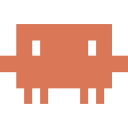

Have a thought? Say it right where you are.
Just unmute for everything.
The best interface for Claude Code and Codex. Talk to them from anywhere on your Mac.
works with  Codex
Codex

Claude CodeCodextypedstartedsavedpicked back up
Have a thought? Say it right where you are.
The best interface for Claude Code and Codex. Talk to them from anywhere on your Mac.

Claude CodeCodexfn — talk, and it types. Into any app, or into the session you picked in the notch.
right ⌥ — talk, and a Claude Code or Codex session starts. From anywhere.
right ⌘ twice — talk to unmute itself. Save, find, pick things back up.
left ⌘ — screenshot mid-sentence. The words and the picture arrive together.
right ⌥ start anything
Wherever you are, one key and one sentence. A Claude Code or Codex session starts and drops into the notch — sized as small as you like.
fn the pocket
Every session sits in the notch. Flip to the one you mean, press the key and say it. It lands there while you stay exactly where you are.
left ⌘ capture · scratchpad
Grab a screenshot in the middle of a sentence. Or arm the scratchpad and pause as long as you like — every thought stacks on the pad, then goes to the task it belongs to.
right ⌘ ×2 unmute agent
No folders, no app to remember. Say why it matters; weeks later, ask in plain words. Or say "continue the landing page" and it's back in your pocket.
one click meetings
The notetaker writes it up with your own Claude or Codex. Then ask what's yours — and hand it straight to a session.
// and yes, it dictates
Press fn anywhere. The pill listens, a tick says it's done, and the words are already at your cursor. If the network drops, it falls back on-device.
// a layer, not a replacement
Claude Code · Codex// pricing